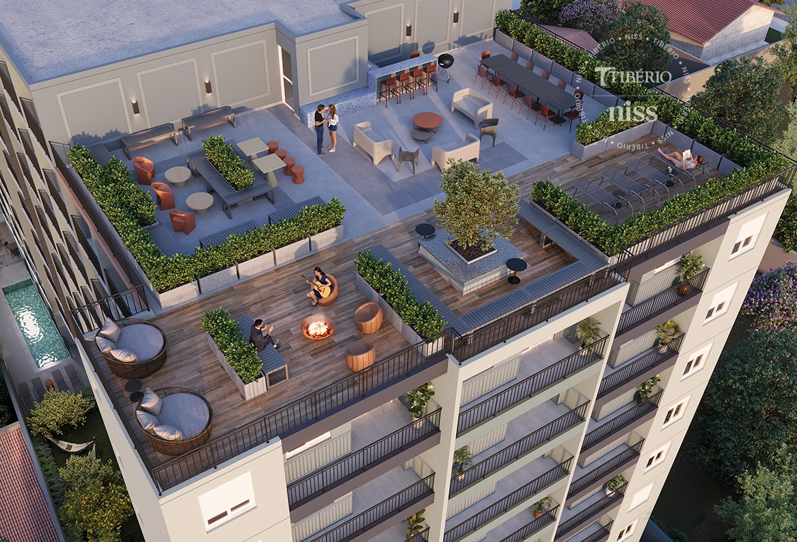

Trend Santa Cruz: Studios, Apartamentos de 1 e 2 Dormitórios e Garden
Conheça o Trend Santa Cruz, lançamento residencial da Tibério na Rua Tirso Martins, 80, em São Paulo. O empreendimento oferece studios, studio reversível e apartamentos de 1 e 2 dormitórios, além de opções Garden, com plantas de 24 a 40 m². Está localizado a aproximadamente 350 metros do Shopping Metrô Santa Cruz e da Estação Santa Cruz.
Quero receber informaçõesConheça o Trend Santa Cruz da Tibério
O Trend Santa Cruz é um empreendimento residencial na região de Santa Cruz, zona sul de São Paulo. Sua localização na Rua Tirso Martins, 80, permite acesso ao Shopping Metrô Santa Cruz e à Estação Santa Cruz, a aproximadamente 350 metros.
O projeto reúne diferentes opções de moradia, incluindo studios, studio reversível, apartamentos de 1 e 2 dormitórios e unidades com opção Garden. São alternativas para quem procura um apartamento compacto em Santa Cruz, com acesso ao metrô, comércio e serviços da região.
Um empreendimento residencial próximo ao Metrô Santa Cruz
Para quem procura studios ou apartamentos próximos ao metrô em São Paulo, o Trend Santa Cruz reúne opções de plantas compactas em uma localização com acesso à Estação Santa Cruz e ao Shopping Metrô Santa Cruz.
A proximidade com transporte público, comércio e serviços é um dos destaques da localização do empreendimento.
Studios e apartamentos no Trend Santa Cruz: conheça as plantas
O Trend Santa Cruz oferece diferentes configurações de plantas para atender a necessidades variadas de moradia. Conheça as opções disponíveis no projeto.
Studio
Opção de apartamento compacto, com ambientes planejados para aproveitar melhor o espaço.
Studio reversível
Uma alternativa de planta com possibilidade de adaptação do ambiente conforme a configuração apresentada no projeto.
Apartamento de 1 dormitório
Planta com um dormitório para quem procura um apartamento funcional na região de Santa Cruz.
Apartamento de 2 dormitórios
Opção com dois dormitórios para quem busca uma configuração residencial com mais ambientes.
Opções Garden no Trend Santa Cruz
O empreendimento também conta com opções Garden. Consulte as plantas e as características de cada unidade para conhecer as alternativas disponíveis.
Lazer e espaços de convivência do Trend Santa Cruz
Conheça as perspectivas dos ambientes de lazer e convivência do Trend Santa Cruz, lançamento da Tibério na região de Santa Cruz, em São Paulo.
Área de lazer e conveniência do Trend Santa Cruz
O Trend Santa Cruz, lançamento da Tibério, apresenta ambientes de lazer e convivência, incluindo espaços como rooftop, coworking, fitness, lavanderia e bicicletário.
Consulte comigo as informações atualizadas sobre plantas, áreas comuns e condições de atendimento.
Consultar detalhes do projeto
Plantas do Trend Santa Cruz
Conheça as plantas do Trend Santa Cruz, lançamento da Tibério, com studios, studio reversível e apartamentos de 1 e 2 dormitórios, além de opções Garden, em metragens de 24 a 40 m².
Trend Santa Cruz em vídeo
Veja também o Trend Santa Cruz em vídeo. Conheça um pouco mais sobre o lançamento da Tibério na região de Santa Cruz, em São Paulo, e confira o conteúdo publicado no Instagram.
 ▶ ASSISTA AO VÍDEO NO INSTAGRAM
▶ ASSISTA AO VÍDEO NO INSTAGRAM
Localização do Trend Santa Cruz: Rua Tirso Martins, 80
O Trend Santa Cruz está localizado na Rua Tirso Martins, 80, na região de Santa Cruz, zona sul de São Paulo, a aproximadamente 350 metros do Shopping Metrô Santa Cruz e da Estação Santa Cruz.
A localização permite acesso ao transporte público, comércio, serviços e conveniências da região. É uma alternativa para quem procura apartamento próximo ao Metrô Santa Cruz e deseja morar em uma região com infraestrutura urbana.
Endereço: Rua Tirso Martins, 80 – São Paulo – SP.
Ver localização no mapaDúvidas frequentes sobre o Trend Santa Cruz
Confira algumas informações sobre o empreendimento, suas plantas e localização.
Onde fica o Trend Santa Cruz?
O Trend Santa Cruz fica na Rua Tirso Martins, 80, na região de Santa Cruz, zona sul de São Paulo.
Qual é a distância do Trend Santa Cruz até o metrô?
O empreendimento está a aproximadamente 350 metros da Estação Santa Cruz e do Shopping Metrô Santa Cruz.
Quais apartamentos existem no Trend Santa Cruz?
O empreendimento oferece studios, studio reversível, apartamentos de 1 e 2 dormitórios e opções Garden.
Qual é a metragem dos apartamentos do Trend Santa Cruz?
As opções de plantas e Garden informadas para o empreendimento estão na faixa de 24 a 40 m². Consulte as plantas para conhecer cada configuração.
Quem é a construtora do Trend Santa Cruz?
O Trend Santa Cruz é um empreendimento da Tibério.
Como receber informações sobre o Trend Santa Cruz?
Você pode entrar em contato pelo WhatsApp para solicitar informações sobre as plantas, características do empreendimento e disponibilidade.
Conheça o Trend Santa Cruz da Tibério e solicite informações
Entre em contato para receber informações sobre o Trend Santa Cruz, conhecer as opções de studios, apartamentos de 1 e 2 dormitórios e Garden, conferir as plantas de 24 a 40 m² e esclarecer suas dúvidas sobre o lançamento.
Conversar com Sandro pelo WhatsApp